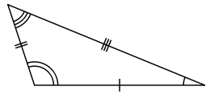

An Angle with measure between zero degress and 90 degrees

- Acute Angle
- Acute Triangle
- Addend
- Additive Inverse
- Adjacent Angle
- Angle
- Area
- Bar Graph
- Benchmark
- Benchmark Fraction
- Bundling/Unbundling
- Common Denominator
- Common Factor
- Common Multiple
- Complex Fractions
- Complimentary Angles
- Compound Fractions
- Cube Root
- Decimal
- Decimal Fraction
- Decimal Number
- Denominator
- Direct Proportion
- Dissimilar Fractions
- Equilateral Triangle
- Exponential Form
- Factor
- Fluency
- Fractions
- Geometric Solid
- Halfway
- Hash Mark
- Hexagon
- Improper Fraction
- Inverse Proportion
- Inequality
- Integers
- Interval
- Isosceles Triangle
- Line Graph
- Linear Expression
- Mean
- Median
- Metric System
- Mixed Number
- Mixed Fraction
- Mode
- Multiple of a Number
- Multiplier
- Negative Integers
- Numerator
- Numerical Expression
- Obtuse Angle
- Obtuse Triangle
- Ordered Pair
- Ordinal Number
- Parallelogram
- Parallel Lines
- Partitive Proportion
- Pattern
- Perimeter
- Perpendicular Lines
- Place Value
- Place Figure
- Perpendicular
- Positive Integers
- Prime Factor
- Prime Number
- Probability
- Proper Fraction
- Quadrilateral
- Quotient
- Reciprocal
- Rectangular Prism
- Reflex Angle
- Relational Symbol
- Remainder
- Right Angle
- Right Triangle
- Rounding Numbers
- Scalene Triangle
- Scientific Notation
- Similar Fractions
- Simplest Form
- Standard Notation
- Supplementary Angles
- Symmetry
- Table of Values
- Trapezoid
- Variable
- Venn Diagram
- Volume
- Whole Numbers
Triangle with all interior angles measuring less than 90 degrees.
A number used in the mathematical operation of addition (e.g. 6+8 =14, 6, and 8 are addends)
A number is what you add to a number to create the sum of zero.
are named by their endpoints
The space usually measured in degrees between two intersecting lines or surfaces at or close to the point where they meet.
A flat, or plane figure is the number of unit squares that can be contained within it. The unit square is usually some standard unit, like a square meter, a square foot, or a square inch.
A representation of the length of either vertical or horizontal bars used to enumerate and compare data.
A commonly known point of reference from which measurements may be made. (ex. four quarters make a whole).
A commonly known fraction that serves as a meaningful reference point for measurement comparison.
Putting smaller units together (or apart) to make a larger (smaller) one.
A number divisible by all of the denominators in a set of fractions.
A whole number that divies without remainder into two or more non-zero numbers.
A whole-number multiple of two or more given numbers.
Is a fraction where the numerator, denominator, or both contain a fraction.
Any two angles whose measures have a sum of 90 degrees.
a fraction in which either the numerator or the denominator, or both, contain one or more fractions.
is the number that multiplies by itself three times in order to create a cubic value.
A fraction whose denominator is a power of ten and whose numerator is expressed by figures placed to the right of a decimal point.
A proper fraction whose denominator is a power of 10.
can be defined as a number whose whole number part and the fractional part is separated by a decimal point.
the number below the line in a common fraction; a divisor.
as one quantity increase, the other quantity increase at the same rate and vice versa.
are fractions that do not have the same denominators.
A triangle with three equal sides.
A mathematical representation of a term raised to a power.
The value that can be divided into another value with no remainder.
The efficient automatic recall of addition, subtraction, multiplication and division facts.
Describes how many parts of a certain size there are, for example, one-half, eight-fifths, three-quarters Numerators and denominators are also used in fractions that are not common, including compound fractions, complex fractions, and mixed numerals.
A three-dimensional shape bounded by surfaces.
with reference to a number line, the midpoint between two numbers.
The marks on a ruler or other measurement tool.
A polygon with siz sides.
A fraction in which the numerator is greater than the denominator.
one quantity increases as the other quantity decreases at the same rate, and vice versa.
A statement relating two or more quantities or values that are not equal using words or symbols.
Composed of positive and negative counting numbers and zero.
A set of numbers or values betwee and, in some cases, including two given values.
A triangle that has two or more congruent sides.
A representation used to show change over an interval, with the data points connected by line segments.
A collection of numbers, symbols, operations, and two or fewer variables with a degree of one.
A measure of center where the sum of a set of numbers is divided by the number of elements in the set.
A measure of center that identifies a value such that half the data is above the value and half the data is below the value when the data is listed in order.
A measurement system based on the base-ten numeration system.
A number represented by a whole number next to a fraction, and is equal to the sumof the whole number and the fraction.
Is a whole number and a proper fraction combined.
A measure of center that is the value or values that occur(s) frequently in a given set of numbers.
A number into which a given number may be divided with no remainder.
The factor representing the number of units.
A negative integer is one of the integers ..., -4 , -3 , -2 , -1.Integers less than zero are called negative integers. These integers are found on the left side of zero on the number line.
The number of equal parts of a total number of parts in a fraction.
An angle whose measure is greater than 90 degrees and less than 180 degrees.
An angle whose measure is greater thatn 90 degrees and less than 180 degrees.
A triangle with an interior obtuse angle
A pair of numbers used to locate and describe points in the coordinate plane in the form (x,y)
A whole number that names the position of an object in a set.
A four-sided plane rectilinear figure with opposite sides parallel.
Lines in the same plane that never intersect and are always equidistant.
a whole is divided into parts that are proportional to the given ratio.
constitutes a set of numbers or objects in which all the members are related with each other by a specific rule.
The continuous line forming the boundary of a closed geometric figure.
Two lines that intersect to form right angles.
The value of a numerical based on the position of each digit in the number.
Are flat two-dimensional shape, plane figure can be made of straight lines, curved lines, or both straight and curved lines.
at an angle of 90° to a given line, plane, or surface.
The positive integers are the numbers 1, 2, 3. Integers greater than zero are called positive integers. These integers are found on the right side of zero on the number line.
All the factors on a quantity that are only divisible by the number one and itself.
A number that has exactly two different factors, one and itself.
The measure of the likelihood of the occurence of an event.
a fraction that is less than one, with the numerator less than the denominator.
A polygon with four sides.
a result obtained by dividing one quantity by another.
a mathematical expression or function so related to another that their product is one; the quantity obtained by dividing the number one by a given quantity.
can be defined as a 3-dimensional solid shape which has six faces that are rectangles.
An angle that is greater than 180 and less than 360.
show how numbers or terms of an equation relate to each other.
a part of something that is left over when other parts have been completed, used, or dealt with.
An angle whose measure is 90 degrees.
A triangle that contains a right angle.
rounding means making a number simpler but keeping its value close to what it was.
A triangle with no congruent sides.
A representation of a very large or very small number expressed as the product of a power of 10, abd a decimal number greater than or equal to one and less than 10.
have the same denominators, as opposed to unlike fractions, which have different denominators.
Fractional: a fraction that has no common factor for the numerator and denominator; Polynomial: ana expression that has no common factors for all terms and no like terms; Radical: there are no perfect square factors contained in the radicand and there are no like terms.
A number written with one digit for each place value in a base ten numeric system.
Two angles whose measures have a sum of 180
A one-to-one correspondence in size, form and arrangement of parts.
A chart that organizes data in rows and columns to illustrate facts and figures.
Is a 4-sided flat shape with straight sides that has a pair of opposite sides parallel.
A symbol that represents a quantity.
A representation that uses circles to show relationship between two or more sets.
the amount of space that a substance or object occupies, or that is enclosed within a container, especially when great.
a number without fractions